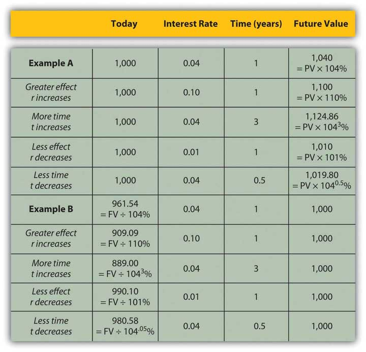
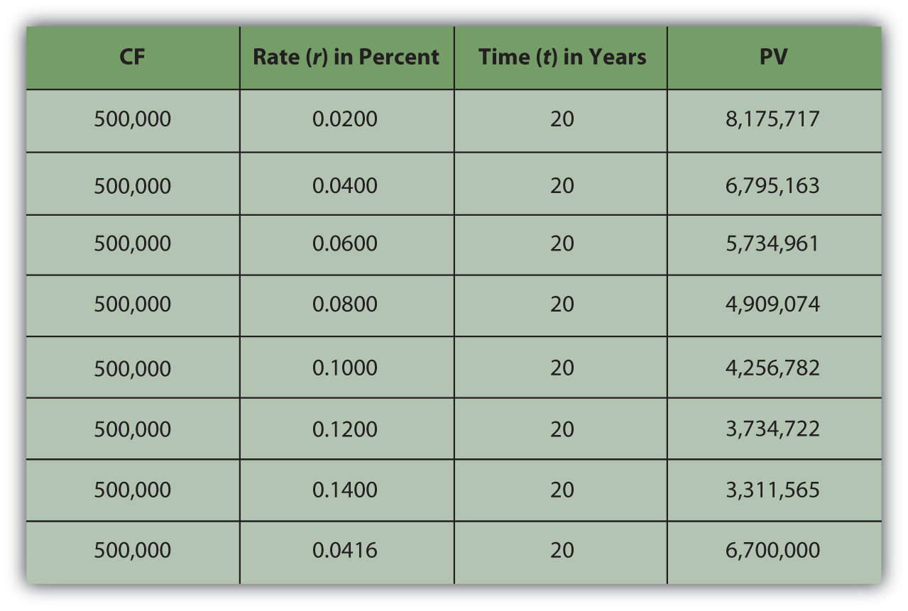
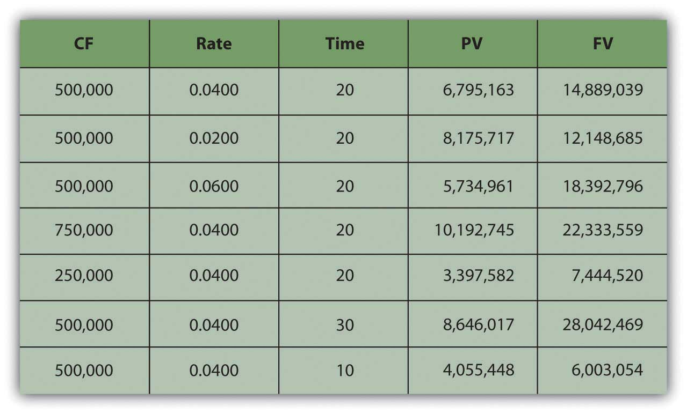
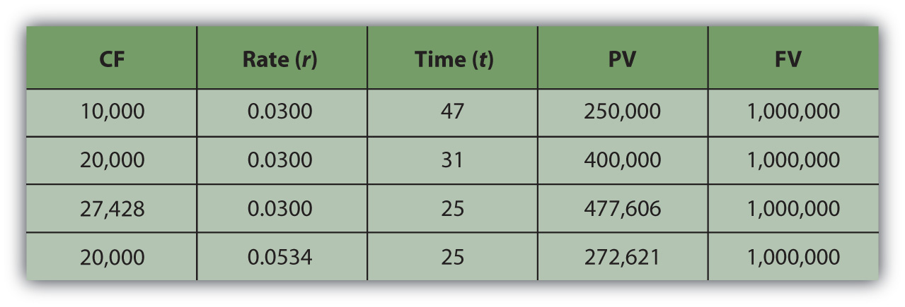
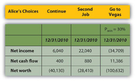

The land may vary more;
But wherever the truth may be—
The water comes ashore,
And the people look at the sea.
Robert Frost, “Neither Out Far Nor In Deep”Robert Frost, “Neither Out Far Nor In Deep,” Selected Poems of Robert Frost (New York: Holt, Rinehart and Winston, Inc., 1963).
Financial decisions can only be made about the future. As much as analysis may tell us about the outcomes of past decisions, the past is “sunk”: it can be known but not decided upon. Decisions are made about the future, which cannot be known with certainty, so evaluating alternatives for financial decisions always involves speculation on both the kind of result and the value of the result that will occur. It also involves understanding and measuring the risks or uncertainties that time presents and the opportunities—and opportunity costs—that time creates.
Part of the planning process is evaluating the possible future results of a decision. Since those results will occur some time from now (i.e., in the future), it is critical to understand how time passing may affect those benefits and costs—not only the probability of their occurrence, but also their value when they do. Time affects value because time affects liquidity.
Liquidity is valuable, and the liquidity of an asset affects its value: all things being equal, the more liquid an asset is, the better. This relationship—how the passage of time affects the liquidity of money and thus its value—is commonly referred to as the time value of moneyThe impact of the passing of time on the value of money, based on the premise that being separated from liquidity creates oportunity cost., which can actually be calculated concretely as well as understood abstractly.
Suppose you went to Mexico, where the currency is the peso. Coming from the United States, you have a fistful of dollars. When you get there, you are hungry. You see and smell a taco stand and decide to have a taco. Before you can buy the taco, however, you have to get some pesos so that you can pay for it because the right currency is needed to trade in that market. You have wealth (your fistful of dollars), but you don’t have wealth that is liquid. In order to change your dollars into pesos and acquire liquidity, you need to exchange currency. There is a fee to exchange your currency: a transaction costThe costs of achieving a trade or “doing a deal” that do not contribute to the value of the thing being traded; a cost created by making an economic transaction., which is the cost of simply making the trade. It also takes a bit of time, and you could be doing other things, so it creates an opportunity cost (see Chapter 2 "Basic Ideas of Finance"). There is also the chance that you won’t be able to make the exchange for some reason, or that it will cost more than you thought, so there is a bit of risk involved. Obtaining liquidity for your wealth creates transaction costs, opportunity costs, and risk.
In general, transforming not-so-liquid wealth into liquid wealth creates transaction costs, opportunity costs, and risk, all of which take away from the value of wealth. Liquidity has value because it can be used without any additional costs.
One dimension of difference between not-so-liquid wealth and liquidity is time. Cash flows (CF) in the past are sunk, cash flows in the present are liquid, and cash flows in the future are not yet liquid. You can only make choices with liquid wealth, not with cash that you don’t have yet or that has already been spent. Separated from your liquidity and your choices by time, there is an opportunity cost: if you had liquidity now, you could use it for consumption or investment and benefit from it now. There is also risk, as there is always some uncertainty about the future: whether or not you will actually get your cash flows and just how much they’ll be worth when you do.
The further in the future cash flows are, the farther away you are from your liquidity, the more opportunity cost and risk you have, and the more that takes away from the present value (PV) of your wealth, which is not yet liquid. In other words, time puts distance between you and your liquidity, and that creates costs that take away from value. The more time there is, the larger its effect on the value of wealth.
Financial plans are expected to happen in the future, so financial decisions are based on values some distance away in time. You could be trying to project an amount at some point in the future—perhaps an investment payout or college tuition payment. Or perhaps you are thinking about a series of cash flows that happen over time—for example, annual deposits into and then withdrawals from a retirement account. To really understand the time value of those cash flows, or to compare them in any reasonable way, you have to understand the relationships between the nominal or face values in the future and their equivalent, present values (i.e., what their values would be if they were liquid today). The equivalent present values today will be less than the nominal or face values in the future because that distance over time, that separation from liquidity, costs us by discounting those values.
Financial calculation is not often a necessary skill since it is easier to use calculators, spreadsheets, and software. However, understanding the calculations is important in understanding the relationships between time, risk, opportunity cost, and value.
To do the math, you need to know
It is usually not difficult to forecast the timing and amounts of future cash flows. Although there may be some uncertainty about them, gauging the rate at which time affects money can require some judgment. That rate, commonly called the discount rateThe effect of time on value or the rate at which time affects value; used when calculating the equivalent present value of a nominal future value. because time discounts value, is the opportunity cost of not having liquidity. Opportunity cost derives from forgone choices or sacrificed alternatives, and sometimes it is not clear what those might have been (see Chapter 2 "Basic Ideas of Finance"). It is an important judgment call to make, though, because the rate will directly affect the valuation process.
At times, the alternatives are clear: you could be putting the liquidity in an account earning 3 percent, so that’s your opportunity cost of not having it. Or you are paying 6.5 percent on a loan, which you wouldn’t be paying if you had enough liquidity to avoid having to borrow; so that’s your opportunity cost. Sometimes, however, your opportunity cost is not so clear.
Say that today is your twentieth birthday. Your grandparents have promised to give you $1,000 for your twenty-first birthday, one year from today. If you had the money today, what would it be worth? That is, how much would $1,000 worth of liquidity one year from now be worth today?
That depends on the cost of its not being liquid today, or on the opportunity costs and risks created by not having liquidity today. If you had $1,000 today, you could buy things and enjoy them, or you could deposit it in an interest-bearing account. So on your twenty-first birthday, you would have more than $1,000. You would have the $1,000 plus whatever interest it had earned. If your bank pays 4 percent per year (interest rates are always stated as annual rates) on your account, then you would earn $40 of interest in the next year, or $1,000 × .04. So on your twenty-first birthday you would have $1,040.
Figure 4.4

If you left that amount in the bank until your twenty-second birthday, you would have
To generalize the computation, if your present valueLiquid value in the present, or the discounted value of a nominal amount of future liquidity, taking into account the effect of time on value., or PV, is your value today, r is the rate at which time affects value or discount rate (in this case, your interest rate), and if t is the number of time periods between you and your liquidity, then the future valueThe value of a present liquidity or projected series of cash flows in the future, accounting for the effects of time on value., or FV, of your wealth would be
Figure 4.5

In this case,
Assuming there is little chance that your grandparents will not be able to give this gift, there is negligible risk. Your only cost of not having liquidity now is the opportunity cost of having to delay consumption or not earning the interest you could have earned.
The cost of delayed consumption is largely derived from a subjective valuation of whatever is consumed, or its utilityValue, including subjective or nonmarket value as well as objective or market value. or satisfaction. The more value you place on having something, the more it “costs” you not to have it, and the more the time that you are without it affects its value.
Assuming that if you had the money today you would save it (as it’s much harder to quantify your joy from consumption), by having to wait to get it until your twenty-first birthday—and not having it today—you miss out on $40 it could have earned.
So, what would that nominal $1,000 (that future value that you get one year from now) actually be worth today? The rate at which time affects your value is 4 percent because that’s what having a choice (spend it or invest it) could earn for you if only you had received the $1,000. That’s your opportunity cost. That’s what it costs you to not have liquidity. Since
Your gift is worth $961.5385 today (its present value). If your grandparents offered to give you your twenty-first birthday gift on your twentieth birthday, they could give you $961.5385 today, which would be the equivalent value to you of getting $1,000 one year from now.
It is important to understand the relationships between time, risk, opportunity cost, and value. This equation describes that relationship:
The “r” is more formally called the “discount rate” because it is the rate at which your liquidity is discounted by time, and it includes not only opportunity costs but also risk. (On some financial calculators, “r” is displayed as “I” or “i.”)
The “t” is how far away you are from your liquidity over time.
Studying this equation yields valuable insights into the relationship it describes. Looking at the equation, you can observe the following relationships.
The more time (t) separating you from your liquidity, the more time affects value. The less time separating you from your liquidity, the less time affects value (as t decreases, PV increases).
| As t increases | the PV of your FV liquidity decreases |
| As t decreases | the PV of your FV liquidity increases |
The greater the rate at which time affects value (r), or the greater the opportunity cost and risk, the more time affects value. The less your opportunity cost or risk, the less your value is affected.
| As r increases | the PV of your FV liquidity decreases |
| As r decreases | the PV of your FV liquidity increases |
Figure 4.6 "Present Values, Interest Rates, Time, and Future Values" presents examples of these relationships.
Figure 4.6 Present Values, Interest Rates, Time, and Future Values
The strategy implications of this understanding are simple, yet critical. All things being equal, it is more valuable to have liquidity (get paid, or have positive cash flow) sooner rather than later and give up liquidity (pay out, or have negative cash flow) later rather than sooner.
If possible, accelerate incoming cash flows and decelerate outgoing cash flows: get paid sooner, but pay out later. Or, as Popeye’s pal Wimpy used to say, “I’ll give you 50 cents tomorrow for a hamburger today.”
To relate a present (liquid) value to a future value, you need to know
The relationship of
The above equation yields valuable insights into these relationships:
It is quite common in finance to value a series of future cash flows (CF), perhaps a series of withdrawals from a retirement account, interest payments from a bond, or deposits for a savings account. The present value (PV) of the series of cash flows is equal to the sum of the present value of each cash flow, so valuation is straightforward: find the present value of each cash flow and then add them up.
Often, the series of cash flows is such that each cash flow has the same future value. When there are regular payments at regular intervals and each payment is the same amount, that series of cash flows is an annuityA series of cash flows in which equal amounts happen at regular, periodic intervals.. Most consumer loan repayments are annuities, as are, typically, installment purchases, mortgages, retirement investments, savings plans, and retirement plan payouts. Fixed-rate bond interest payments are an annuity, as are stable stock dividends over long periods of time. You could think of your paycheck as an annuity, as are many living expenses, such as groceries and utilities, for which you pay roughly the same amount regularly.
To calculate the present value of an annuity, you need to know
Almost any calculator and the many readily available software applications can do the math for you, but it is important for you to understand the relationships between time, risk, opportunity cost, and value.
If you win the lottery, for example, you are typically offered a choice of payouts for your winnings: a lump sum or an annual payment over twenty years.
The lottery agency would prefer that you took the annual payment because it would not have to give up as much liquidity all at once; it could hold on to its liquidity longer. To make the annual payment more attractive for you—it isn’t, because you would want to have more liquidity sooner—the lump-sum option is discounted to reflect the present value of the payment annuity. The discount rate, which determines that present value, is chosen at the discretion of the lottery agency.
Say you win $10 million. The lottery agency offers you a choice: take $500,000 per year over 20 years or take a one-time lump-sum payout of $6,700,000. You would choose the alternative with the greatest value. The present value of the lump-sum payout is $6,700,000. The value of the annuity is not simply $10 million, or $500,000 × 20, because those $500,000 payments are received over time and time affects liquidity and thus value. So the question is, What is the annuity worth to you?
Your discount rate or opportunity cost will determine the annuity’s value to you, as Figure 4.8 "Lottery Present Value with Different Discount Rates" shows.
Figure 4.8 Lottery Present Value with Different Discount Rates
As expected, the present value of the annuity is less if your discount rate—or opportunity cost or next best choice—is more. The annuity would be worth the same to you as the lump-sum payout if your discount rate were 4.16 percent.
In other words, if your discount rate is about 4 percent or less—if you don’t have more lucrative choices than earning 4 percent with that liquidity—then the annuity is worth more to you than the immediate payout. You can afford to wait for that liquidity and collect it over twenty years because you have no better choice. On the other hand, if your discount rate is higher than 4 percent, or if you feel that your use of that liquidity would earn you more than 4 percent, then you have more lucrative things to do with that money and you want it now: the annuity is worth less to you than the payout.
For an annuity, as when relating one cash flow’s present and future value, the greater the rate at which time affects value, the greater the effect on the present value. When opportunity cost or risk is low, waiting for liquidity doesn’t matter as much as when opportunity costs or risks are higher. When opportunity costs are low, you have nothing better to do with your liquidity, but when opportunity costs are higher, you may sacrifice more by having no liquidity. Liquidity is valuable because it allows you to make choices. After all, if there are no more valuable choices to make, you lose little by giving up liquidity. The higher the rate at which time affects value, the more it costs to wait for liquidity, and the more choices pass you by while you wait for liquidity.
When risk is low, it is not really important to have your liquidity firmly in hand any sooner because you’ll have it sooner or later anyhow. But when risk is high, getting liquidity sooner becomes more important because it lessens the chance of not getting it at all. The higher the rate at which time affects value, the more risk there is in waiting for liquidity and the more chance that you won’t get it at all.
| As r increases | the PV of the annuity decreases |
| As r decreases | the PV of the annuity increases |
You can also look at the relationship of time and cash flow to annuity value. Suppose your payout was more (or less) each year, or suppose your payout happened over more (or fewer) years (Figure 4.9 "Lottery Payout Present Values").
Figure 4.9 Lottery Payout Present Values

As seen in Figure 4.9 "Lottery Payout Present Values", the amount of each payment or cash flow affects the value of the annuity because more cash means more liquidity and greater value.
| As CF increases | the PV of the annuity increases |
| As CF decreases | the PV of the annuity decreases |
Although time increases the distance from liquidity, with an annuity, it also increases the number of payments because payments occur periodically. The more periods in the annuity, the more cash flows and the more liquidity there are, thus increasing the value of the annuity.
| As t increases | the PV of the annuity increases |
| As t decreases | the PV of the annuity decreases |
It is common in financial planning to calculate the FV of a series of cash flows. This calculation is useful when saving for a goal where a specific amount will be required at a specific point in the future (e.g., saving for college, a wedding, or retirement).
It turns out that the relationships between time, risk, opportunity cost, and value are predictable going forward as well. Say you decide to take the $500,000 annual lottery payout for twenty years. If you deposit that payout in a bank account earning 4 percent, how much would you have in twenty years? What if the account earned more interest? Less interest? What if you won more (or less) so the payout was more (or less) each year?
What if you won $15 million and the payout was $500,000 per year for thirty years, how much would you have then? Or if you won $5 million and the payout was only for ten years? Figure 4.10 "Lottery Payout Future Values" shows how future values would change.
Figure 4.10 Lottery Payout Future Values
Going forward, the rate at which time affects value (r) is the rate at which value grows, or the rate at which your value compounds. It is also called the rate of compoundingThe effect of time on value or the rate at which time affects value; used when calculating the equivalent future value of a present amount of liquidity.. The bigger the effect of time on value, the more value you will end up with because more time has affected the value of your money while it was growing as it waited for you. So, looking forward at the future value of an annuity:
| As r increases | the FV of the annuity increases |
| As r decreases | the FV of the annuity decreases |
The amount of each payment or cash flow affects the value of the annuity because more cash means more liquidity and greater value. If you were getting more cash each year and depositing it into your account, you’d end up with more value.
| As CF increases | the FV of the annuity increases |
| As CF decreases | the FV of the annuity decreases |
The more time there is, the more time can affect value. As payments occur periodically, the more cash flows there are, the more liquidity there is. The more periods in the annuity, the more cash flows, and the greater the effect of time, thus increasing the future value of the annuity.
| As t increases | the FV of the annuity increases |
| As t decreases | the FV of the annuity decreases |
There is also a special kind of annuity called a perpetuityAn infinite annuity; a stream of periodic cash flows that continues indefinitely., which is an annuity that goes on forever (i.e., a series of cash flows of equal amounts occurring at regular intervals that never ends). It is hard to imagine a stream of cash flows that never ends, but it is actually not so rare as it sounds. The dividends from a share of corporate stock are a perpetuity, because in theory, a corporation has an infinite life (as a separate legal entity from its shareholders or owners) and because, for many reasons, corporations like to maintain a steady dividend for their shareholders.
The perpetuity represents the maximum value of the annuity, or the value of the annuity with the most cash flows and therefore the most liquidity and therefore the most value.
Once you understand the idea of the time value of money, and of its use for valuing a series of cash flows and of annuities in particular, you can’t believe how you ever got through life without it. These are the fundamental relationships that structure so many financial decisions, most of which involve a series of cash inflows or outflows. Understanding these relationships can be a tool to help you answer some of the most common financial questions about buying and selling liquidity, because loans and investments are so often structured as annuities and certainly take place over time.
Loans are usually designed as annuities, with regular periodic payments that include interest expense and principal repayment. Using these relationships, you can see the effect of a different amount borrowed (PVannuity), interest rate (r), or term of the loan (t) on the periodic payment (CF).
For example, if you get a $250,000 (PV), thirty-year (t), 6.5 percent (r) mortgage, the monthly payment will be $1,577 (CF). If the same mortgage had an interest rate of only 5.5 percent (r), your monthly payment would decrease to $1,423 (CF). If it were a fifteen-year (t) mortgage, still at 6.5 percent (r), the monthly payment would be $2,175 (CF). If you can make a larger down payment and borrow less, say $200,000 (PV), then with a thirty-year (t), 6.5 percent (r) mortgage you monthly payment would be only $1,262 (CF) (Figure 4.11 "Mortgage Calculations").
Figure 4.11 Mortgage Calculations

Note that in Figure 4.11 "Mortgage Calculations", the mortgage rate is the monthly rate, that is, the annual rate divided by twelve (months in the year) or r ÷ 12, and that t is stated as the number of months, or the number of years × 12 (months in the year). That is because the mortgage requires monthly payments, so all the variables must be expressed in units of months. In general, the periodic unit used is defined by the frequency of the cash flows and must agree for all variables. In this example, because you have monthly cash flows, you must calculate using the monthly discount rate (r) and the number of months (t).
Saving to reach a goal—to provide a down payment on a house, or a child’s education, or retirement income—is often accomplished by a plan of regular deposits to an account for that purpose. The savings plan is an annuity, so these relationships can be used to calculate how much would have to be saved each period to reach the goal (CF), or given how much can be saved each period, how long it will take to reach the goal (t), or how a better investment return (r) would affect the periodic savings, or the time needed (t), or the goal (FV).
For example, if you want to have $1,000,000 (FV) in the bank when you retire, and your bank pays 3 percent (r) interest per year, and you can save $10,000 per year (CF) toward retirement, can you afford to retire at age sixty-five? You could if you start saving at age eighteen, because with that annual saving at that rate of return, it will take forty-seven years (t) to have $1,000,000 (FV). If you could save $20,000 per year (CF), it would only take thirty-one years (t) to save $1,000,000 (FV). If you are already forty years old, you could do it if you save $27,428 per year (CF) or if you can earn a return of at least 5.34 percent (r) (Figure 4.12 "Retirement Savings Calculations").
Figure 4.12 Retirement Savings Calculations
As you can see, the relationships between time, risk, opportunity cost, and value are some of the most important relationships you will ever encounter in life, and understanding them is critical to making sound financial decisions.
Modern tools make it much easier to do the math. Calculators, spreadsheets, and software have been developed to be very user friendly and widely available.
Financial calculators are designed for financial calculations and have the equations relating the present and future values, cash flows, the discount rate, and time embedded, for single amounts or for a series of cash flows, so that you can calculate any one of those variables if you know all the others.
Personal finance software packages usually come with a planning calculator, which is nothing more than a formula with these equations embedded, so that you can find any one variable if you know the others. These tools are usually presented as a “mortgage calculator” or a “loan calculator” or a “retirement planner” and are set up to answer common planning questions such as “How much do I have to save every year for retirement?” or “What will my monthly loan payment be?”
Spreadsheets also have the equations already designed and readily accessible, as functions or as macros. There are also stand-alone software applications that may be downloaded to a mobile device, such as a smartphone or Personal Digital Assistant (PDA). They are useful in answering planning questions but lack the ability to store and track your situation in the way that a more complete software package can.
The calculations are discussed here not so that you can perform them, as you have many tools to choose from that can do that more efficiently, but so that you can understand them, and most importantly, so that you can understand the relationships that they describe.
To calculate the present value of an annuity, you need to know
The calculation for the present value of an annuity yields valuable insights.
The calculation for the future value of an annuity yields valuable insights.
Now that you understand the relationship of time and value, especially looking forward, you can begin to think about how your ideas and plans will look as they happen. More specifically, you can begin to see how your future will look in the mirror of your financial statements. Projected or pro forma financial statementsProjected results for financial statements in the future, given assumptions about what will happen in the meantime. can show the consequences of choices. To project future financial statements, you need to be able to envision the expected results of all the items on them. This can be difficult, for there can be many variables that may affect your income and expenses or cash flows (CF), and some of them may be unpredictable. Predictions always contain uncertainty, so projections are always, at best, educated guesses. Still, they can be useful in helping you to see how the future may look.
We can glimpse Alice’s projected cash flow statements and balance sheets for each of her choices, for example, and their possible outcomes. Alice can actually project how her financial statements will look after each choice is followed.
When making financial decisions, it is helpful to be able to think in terms of their consequences on the financial statements, which provide an order to our summary of financial results. For example, in previous chapters, Alice was deciding how to decrease her debt. Her choices were to continue to pay it down gradually as she does now; to get a second job to pay it off faster; or to go to Vegas, hit it big (or lose big), and eliminate her debt altogether (or wind up with even more). Alice can look at the effects of each choice on her financial statements (Figure 4.14 "Potential Effects on Alice’s Financial Statements")
Figure 4.14 Potential Effects on Alice’s Financial Statements

Looking more closely at the actual numbers on each statement gives a much clearer look at Alice’s situation. Beginning with the income statement, income will increase if she works a second job or goes to Vegas and wins, while expenses will increase (travel expense) if she goes to Vegas at all. Assume that her second job would bring in an extra $20,000 income and that she could win or lose $100,000 in Vegas. Any change in gross wages or winnings (losses) would have a tax consequence; if she loses in Vegas, she will still have income taxes on her salary. Figure 4.15 "Alice’s Pro Forma Income Statements" begins with Alice’s pro forma income statements.
Figure 4.15 Alice’s Pro Forma Income Statements
While Vegas yields the largest increase in net income or personal profit if she wins, it creates the largest decrease if she loses; it is clearly the riskiest option. The pro forma cash flow statements (Figure 4.16 "Alice’s Pro Forma Cash Flow Statements") reinforce this observation.
Figure 4.16 Alice’s Pro Forma Cash Flow Statements

If Alice has a second job, she will use the extra cash flow, after taxes, to pay down her student loan, leaving her with a bit more free cash flow than she would have had without the second job. If she wins in Vegas, she can pay off both her car loan and her student loan and still have an increased free cash flow. However, if she loses in Vegas, she will have to secure more debt to cover her losses. Assuming she borrows as much as she loses, she will have a small negative net cash flow and no free cash flow, and her other assets will have to make up for this loss of cash value.
So, how will Alice’s financial condition look in one year? That depends on how she proceeds, but the pro forma balance sheets (Figure 4.17 "Alice’s Pro Forma Balance Sheets") can give a glimpse.
Figure 4.17 Alice’s Pro Forma Balance Sheets

If Alice has a second job, her net worth increases but is still negative, as she has paid down more of her student loan than she otherwise would have, but it is still larger than her asset value. If she wins in Vegas, her net worth can be positive; with her loan paid off entirely, her asset value will equal her net worth. However, if she loses in Vegas, she will have to borrow more, her new debt quadrupling her liabilities and decreasing her net worth by that much more.
A summary of the critical “bottom lines” from each pro forma statement (Figure 4.18 "Alice’s Pro Forma Bottom Lines") most clearly shows Alice’s complete picture for each alternative.
Figure 4.18 Alice’s Pro Forma Bottom Lines
Going to Vegas creates the best and the worst scenarios for Alice, depending on whether she wins or loses. While the outcomes for continuing or getting a second job are fairly certain, the outcome in Vegas is not; there are two possible outcomes in Vegas. The Vegas choice has the most risk or the least certainty.
The Vegas alternative also has strategic costs: if she loses, her increased debt and its obligations—more interest and principal payments on more debt—will further delay her goal of building an asset base from which to generate new sources of income. In the near future, or until her new debt is repaid, she will have even fewer financial choices.
The strategic benefit of the Vegas alternative is that if she wins, she can eliminate debt, begin to build her asset base, and have even more choices (by eliminating debt and freeing cash flow).
The next step for Alice would be to try to assess the probabilities of winning or of losing in Vegas. Once she has determined the risk involved—given the consequences now illuminated on the pro forma financial statements—she would have to decide if she can tolerate that risk, or if she should reject that alternative because of its risk.
Pro forma financial statements show the consequences of financial choices in the context of the financial statements.
Risk affects financial decision making in mysterious ways, many of which are the subject of an entire area of scholarship now known as behavioral finance. The study of risk and the interpretation of probabilities are complex. In making financial decisions, a grasp of their basic dynamics is useful. One of the most important to understand is the idea of independence.
An independent eventAn event made neither more nor less probable by the occurrence of another event. is one that happens by chance. It cannot be willed or decided upon. The probability or likelihood of an independent event can be measured, based on its frequency in the past, and that probability can be used to predict whether it will recur. Independent events can be the result of complex situations. They can be studied to see which confluence of circumstances or conditions make them more or less likely or affect their probability. But an independent event is, in the end, no matter how skillfully analyzed, a matter of some chance or uncertainty or risk; it cannot be determined or chosen.
Alice can choose whether or not to go to Vegas, but she cannot choose whether or not to win. Winning—or losing—is an independent event. She can predict her chances, the probability, that she’ll win based on her past experiences, her apparent skill and knowledge, and the known odds of casino gambling (about which many studies have been done and there is much knowledge available). But she cannot choose to win; there is always some uncertainty or risk that she will not.
The probability of any one outcome for an event is always stated as a percentage of the total outcomes possible. An independent or risky event has at least two possible outcomes: it happens or it does not happen. There may be more outcomes possible, but there are at least two; if there were only one outcome possible, there would be no uncertainty or risk about the outcome.
For example, you have a “50-50 chance” of “heads” when you flip a coin, or a 50 percent probability. On average “heads” comes up half the time. That probability is based on historic frequency; that is, “on average” means that for all the times that coins have been flipped, half the time “heads” is the result. There are only two possible outcomes when you flip a coin, and there is a 50 percent chance of each. The probabilities of each possible outcome add up to 100 percent, because there is 100 percent probability that something will happen. In this case, half the time it is one result, and half the time it is the other. In general, the probabilities of each possible outcome—and there may be many—add to 100 percent.
Probabilities can be used in financial decisions to measure the expected result of an independent event. That expectation is based on the probabilities of each outcome and its result if it does occur. Suppose you have a little wager going on the coin flip; you will win a dollar if it come up “heads” and you will lose a dollar if it does not (“tails”). You have a 50 percent chance of $1.00 and a 50 percent chance of −$1.00. Half the time you can expect to gain a dollar, and half the time you can expect to lose a dollar. Your expectation of the average result, based on the historic frequency or probability of each outcome and its actual result, is
—note that the probabilityheads + the probabilitytails = 1 or 100%—because those are all the possible outcomes. The expected result for each outcome is its probability or likelihood multiplied by its result. The expected result or expected valueThe weighted average result for an event, or the value expected, on average, given the probabilities of each of its possible outcomes. for the action, for flipping a coin, is its weighted average outcome, with the “weights” being the probabilities of each of its outcomes.
If you get $1.00 every time the coin flips “heads” and it does so half the time, then half the time you get a dollar, or you can expect overall to realize half a dollar or $0.50 from flipping “heads.” The other half of the time, you can expect to lose a dollar, so your expectation has to include the possibility of flipping “tails” with an overall or average result of losing $0.50 or −$0.50. So you can expect 0.50 from one outcome and −0.50 from the other: altogether, you can expect 0.50 + −0.50 or 0 (which is why “flipping coins” is not a popular casino game.)
The expected value (E(V)) of an event is the sum of each possible outcome’s probability multiplied by its result, or
where Σ means summation, p is the probability of an outcome, r is its result, and n is the number of outcomes possible.
When faced with the uncertainty of an alternative that involves an independent event, it is often quite helpful to be able to at least calculate its expected value. Then, when making a decision, that expectation can be weighed against or compared to those of other choices.
For example, Alice has projected four possible outcomes for her finances depending on whether she continues, gets a second job, wins in Vegas, or loses in Vegas, but there are really only three choices: continue, second job, or go to Vegas—since winning or losing are outcomes of the one decision to go to Vegas. She knows, with little or no uncertainty, how her financial situation will look if she continues or gets a second job. To compare the Vegas choice with the other two, she needs to predict what she can expect from going to Vegas, given that she may win or lose once there.
Alice can calculate the expected result of going to Vegas if she knows the probabilities of its two outcomes, winning and losing. Alice does a bit of research and has a friend show her a few tricks and decides that for her the probability of winning is 30 percent, which makes the probability of losing 70 percent. (As there are only two possible outcomes in this case, their probabilities must add to 100 percent.) Her expected result in Vegas, then, is
Using the same calculations, she can project the expected result of going to Vegas on her pro forma financial statements (Figure 4.21 "Alice’s Expected Outcomes with a 30 Percent Chance of Winning in Vegas"). Look at the effect on her bottom lines:
Figure 4.21 Alice’s Expected Outcomes with a 30 Percent Chance of Winning in Vegas
If she only has a 30 percent chance of winning in Vegas, then going there at all is the worst choice for her in terms of her net income and net worth. Her net cash flow (CF) actually seems best with the Vegas option, but that assumes she can borrow to pay her gambling losses, so her losses don’t create net negative cash flow. She does, however, create debt.
Alice can also calculate what the probability of winning would have to be to make it a worthwhile choice at all, that is, to give her at least as good a result as either of her other choices (Figure 4.22 "Alice’s Expected Outcomes to Make Vegas a Competitive Choice").
Figure 4.22 Alice’s Expected Outcomes to Make Vegas a Competitive Choice

To be the best choice in terms of all three bottom lines, Alice would have to have a 78 percent chance of winning at Vegas.
Her net worth would still be negative, but all three bottom lines would be at least as good or better than they would be with her other two choices. If Alice thought she had at least a 78 percent chance of winning and could tolerate the risk that she might not, Vegas would be a viable choice for her.
Those are two very big “ifs,” but by being able to project an expected value or result for each of her choices, using the probabilities of each outcome for the choice with uncertainty, Alice can at least measure and compare the choices.
Using probabilities to derive the expected value of a choice provides a way to evaluate an alternative with uncertainty. It requires projecting the probabilities and results of each possible outcome or independent event. It cannot remove the uncertainty or the risk that independence presents, but it can at least provide a way to measure and then compare with other measurable, certain or uncertain, choices.